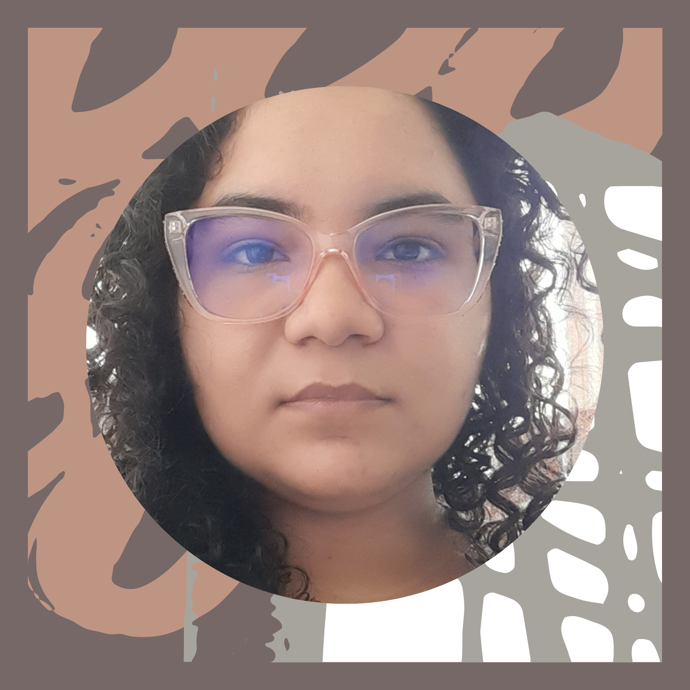

Sobre Min
Olá sou Adrielly Uchoa
Tenho 26 anos sou estudante de desenvolvimento Web, esse projeto foi desenvolvido durante o curso Meu primeiro site do Inspira ja.


O Objetivo de Desenvolvimento Sustentável (ODS) número 14 é "Vida na Água". Este objetivo faz parte da Agenda 2030 para o Desenvolvimento Sustentável, que foi adotada pela Assembleia Geral das Nações Unidas em setembro de 2015. O objetivo "Vida na Água" tem como foco a conservação e o uso sustentável dos oceanos, mares e recursos marinhos para o desenvolvimento sustentável.
Reduzir a poluição marinha: Isso envolve a redução significativa da poluição de origem terrestre, como resíduos plásticos, produtos químicos tóxicos e poluentes orgânicos persistentes, que afetam negativamente a vida marinha.
Conservação de ecossistemas marinhos: Promover a conservação e a gestão sustentável dos ecossistemas costeiros e marinhos, incluindo a proteção de áreas marinhas e costeiras.
Manejo sustentável de recursos marinhos: Regular a pesca e a aquicultura para garantir que os recursos marinhos sejam explorados de maneira sustentável, evitando a sobrepesca e a degradação dos estoques de peixes.
Minimizar a acidificação dos oceanos: Tomar medidas para lidar com a acidificação dos oceanos, que é causada pelo aumento da concentração de dióxido de carbono na atmosfera e afeta os organismos marinhos, como corais e moluscos.
Apoiar a pesquisa marinha: Promover a pesquisa científica para aumentar a compreensão dos ecossistemas marinhos e as formas de protegê-los e gerenciá-los de maneira sustentável.
Regular a exploração de áreas além da jurisdição nacional: Estabelecer um marco legal internacional para a conservação e o uso sustentável da biodiversidade marinha em áreas além da jurisdição nacional.
O ODS 14 reconhece a importância dos oceanos e dos recursos marinhos para a vida no planeta, incluindo o fornecimento de alimentos, regulação do clima, oportunidades econômicas e lazer. Para alcançar esse objetivo, é necessária a colaboração internacional, ações coordenadas entre governos, setor privado, sociedade civil e organizações internacionais, além do comprometimento com práticas sustentáveis em todas as atividades relacionadas aos ecossistemas marinhos.
Olá sou Adrielly Uchoa
Tenho 26 anos sou estudante de desenvolvimento Web, esse projeto foi desenvolvido durante o curso Meu primeiro site do Inspira ja.